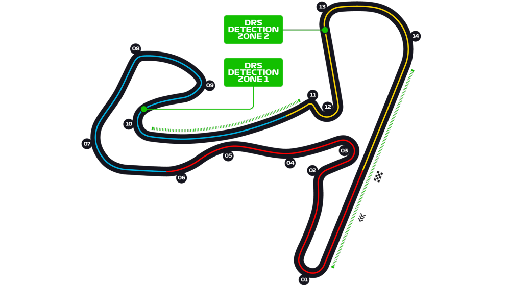
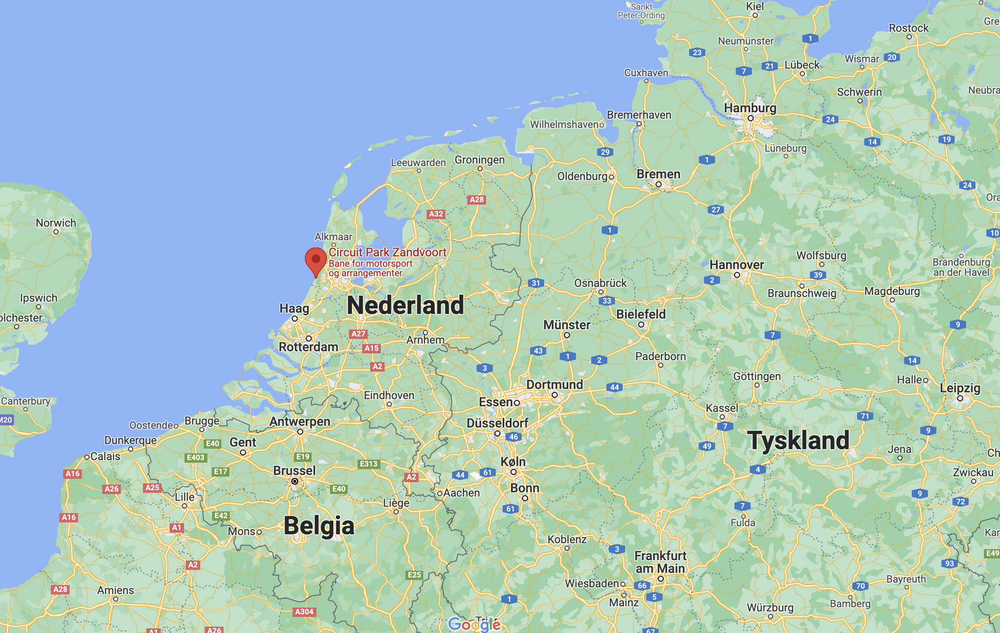
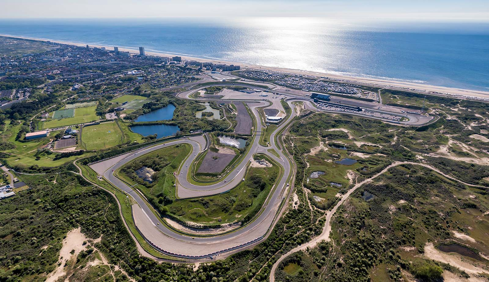
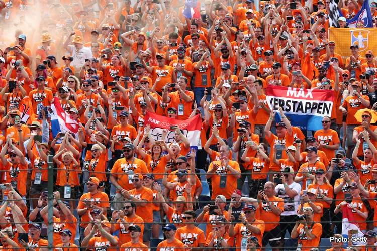

Circuit Park Zandvoort


Circuit Park Zanvoort er kjent for de raske svingene og korte rettstrekker. Det er alltid noe som skjer på banen noe som gjør en runde her ekstra krevende for førerene. Zanvoort er en lite by ikke langt fra Amsterdam ut mot sjøren, noe som gjør vindforholdene på banen uforutsigbare og vanskelige. I 2020 ble banen bygget om for å kunnne arrangere Formel 1 igjen etter som det forrige løpet var i 1985. Løpet i 2020 ble avlyst, men i år var sirkuset endelig tilbake på Zanvoort.

Løpet i år var dominert av Max Verstappen fra start. Han kvalifiserte seg på pole position og kjørt inn til seier på løpsdagen. Det var en viktig seier for nederlenderen som fikk juble sammen med sine fans i en sky av orasnj røyk. Den oransje armeen som følge Verstappen fra løp til løp fikk juble på hjemmebane for første gang på lenge. I helgen så vi flere røde flagg i og med at banen ikke blir trygg hvis det står en bil på siden på grunn av farten og de blinde svingene på banen.

Fun Facts
Banen er 4,259km lang, noe som gjør den en av de korteste banene
Banen åpnet i 1948, og sien det første F1 løpet i 1952 har F1 kjørt her 31 ganger.
Banen er den eneste i Nederland som har hatt et Formel 1 løp.
Løpet er på 72 runder og den kjappeste ble satt av Lewis Hamilton i år med tiden 1:11,
